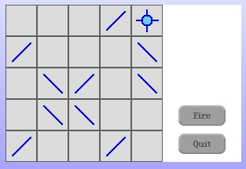

Making Larger Cells
For our next enhancement I want to change the size of our cells. Making them bigger will make the game cells easier to see, as well as any hint arrows within the mirror cells. It should also "illuminate" (pardon the pun) any issues we may have with unintended constants in our code.
Close any open LaserGame morphs you may have open before beginning the next section.
The easiest change is to redefine the constant that declares the size of our cells. Change the class method on our CellRenderer class.
cellExtent
^40@40
Let's open up a new LaserGame morph and see what this does for us.
That's pretty good. The Target Cell circle looks like it didn't scale with the new larger cell. Let's examine the code that draws the Target Cell. Before we change the code that draws the Target Cell we should close the LaserGame morph.
Here is the existing instance method that draws the circle on our TargetCellRenderer class.
drawCircleOutline
| delta offset fillForm circle |
delta := CellRenderer cellExtent - 1.
offset := self offsetWithinGridForm.
circle := Circle new.
fillForm := Form extent: 2@2 depth: 8.
fillForm fillColor: LaserGameColors targetCenterColor.
circle form: fillForm.
circle radius: 7.
circle center: (offset + (delta // 2)).
circle displayOn: self targetForm.
The radius is hard-coded at 7. We should probably make the radius dependent on the over-all size of our cell. I'm inclined to pull the radius calculation out into a separate method because we should use it for our circle fill color code too. Here's a new instance method to calculate the radius for us.
radius
^(self class cellExtent x // 2 - 8) min: 10
This calculation uses the size of the cell to calculate a new radius. Notice that I put a "clamp" in the final result. We're going to restrict the radius to be no larger than 10.
Now we go back and use this radius calculation in our #drawCircleOutline method.
drawCircleOutline
| delta offset fillForm circle |
delta := self class cellExtent - 1.
delta := CellRenderer cellExtent - 1.
offset := self offsetWithinGridForm.
circle := Circle new.
fillForm := Form extent: 2@2 depth: 8.
fillForm fillColor: LaserGameColors targetCenterColor.
circle form: fillForm.
circle radius: self radius.
circle radius: 7.
circle center: (offset + (delta // 2)).
circle displayOn: self targetForm.
I also changed the "delta := CellRenderer cellExtent - 1." calculation to use the class method available from our hierarchy. Let's open up another new LaserGame morph and see how we're doing.
The circle is bigger. We need to modify the fill color code to account for the change in our radius. Here is the modified method.
renderInnerCircleColor: aColor
| circle fillForm offset delta |
delta := CellRenderer cellExtent - 1.
offset := self offsetWithinGridForm.
circle := Circle new.
fillForm := Form extent: 4@4 depth: 8.
fillForm fillColor: aColor.
circle form: fillForm.
circle radius: self radius - 4.
circle center: (offset + (delta // 2) - 1).
circle displayOn: self targetForm.
We deleted the "circle radius: 3." line and replaced with a new calculation using the radius calculation from before. With our LaserGame morph still around all we have to do is click on the "Fire/Stop" button to see our new color fill code working.